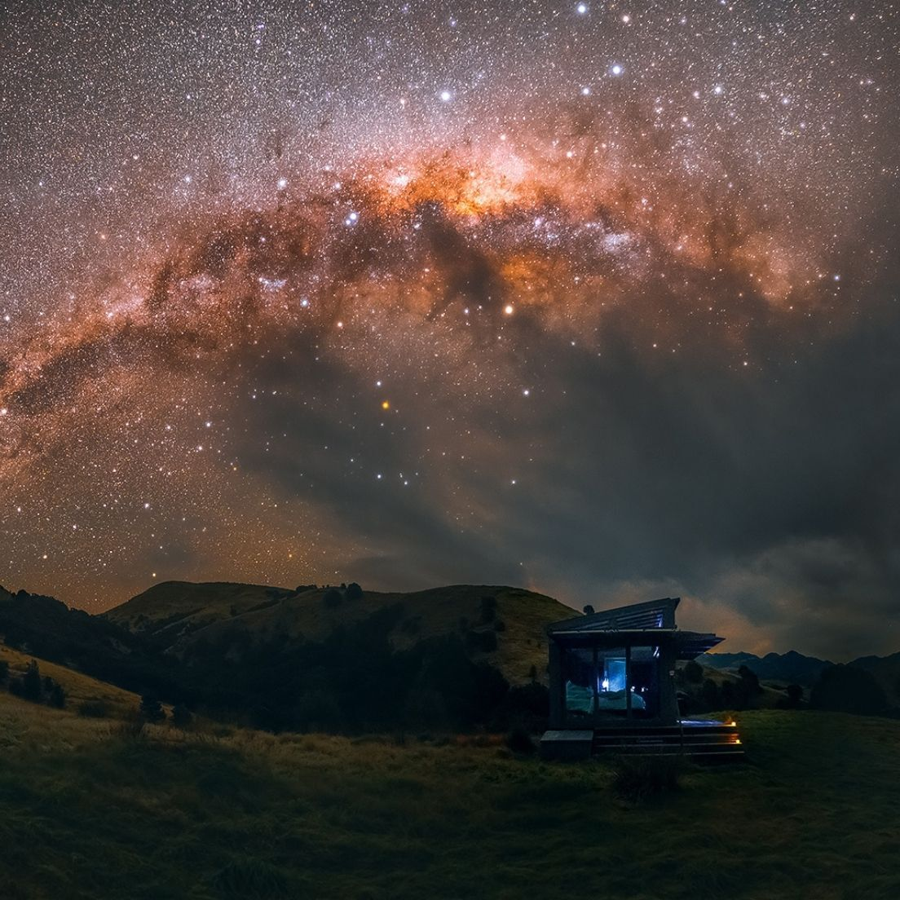
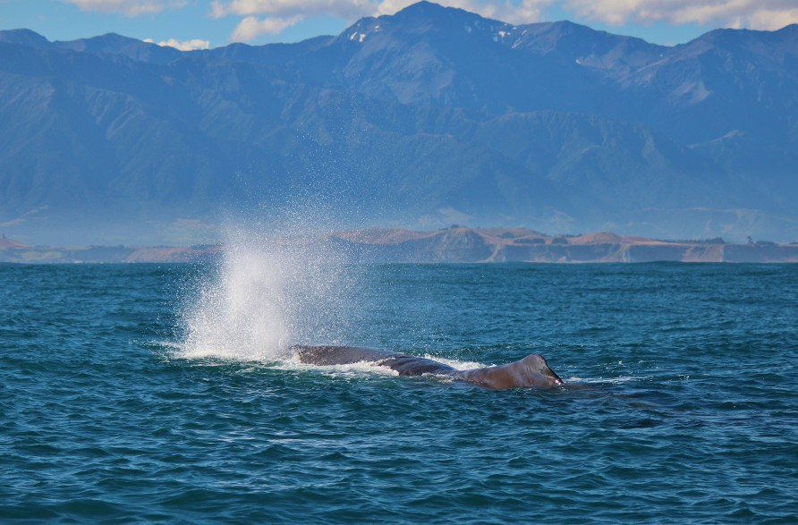
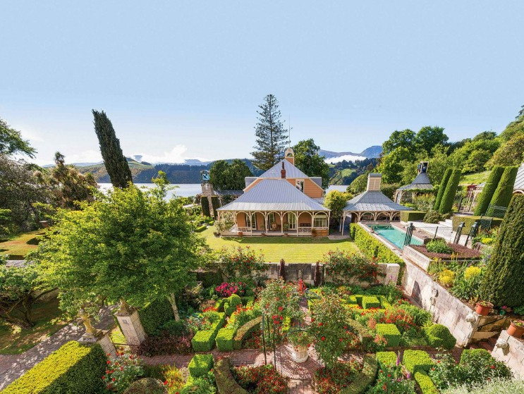
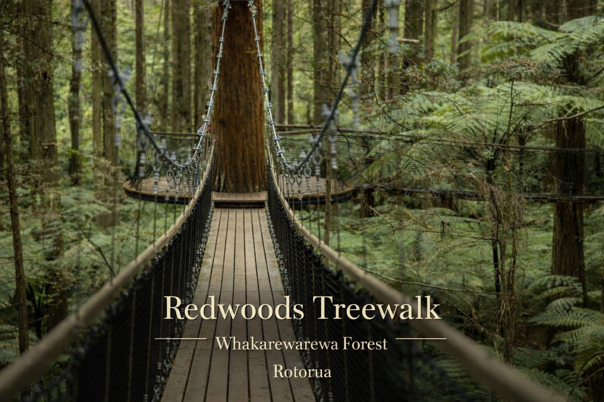
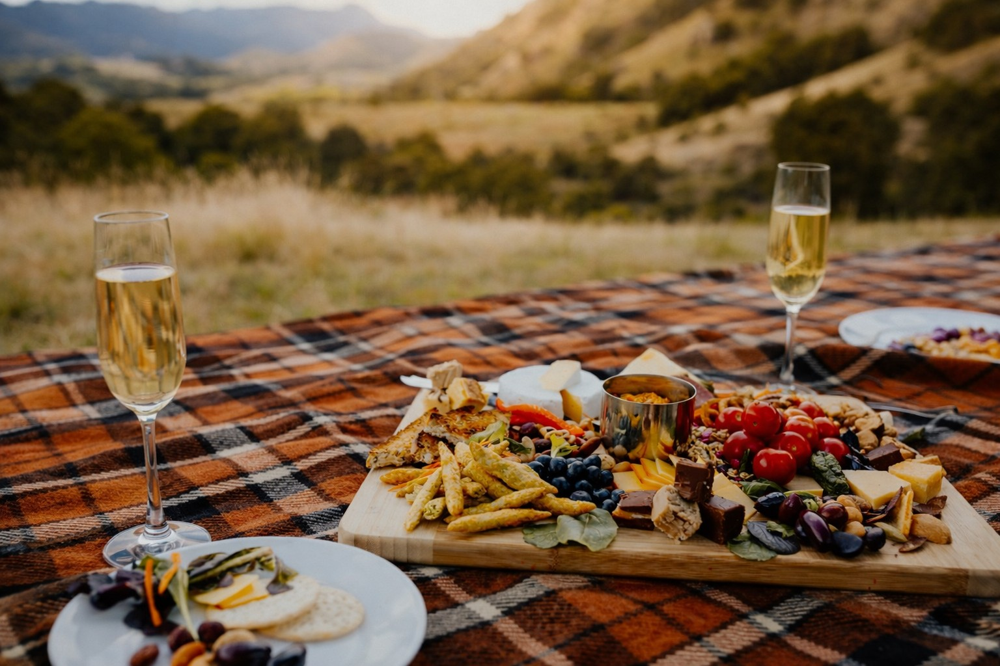

New Zealand · Private glass eco-cabins
Arrive slowly.
Stay present.
PurePods are secluded glass cabins set in real landscapes — calm, minimal, and designed for two. Let the day lengthen. Let the sky do the talking.
New Zealand · Private glass eco-cabins
PurePods are secluded glass cabins set in real landscapes — calm, minimal, and designed for two. Let the day lengthen. Let the sky do the talking.
This is not a hotel corridor or a busy lodge. Each PurePod sits in partnership with its land — private, unhurried, and tuned to weather, birdsong, and night light. You come for the stillness; the landscape supplies the rest.
Immersion
Scroll the filmstrip — sixteen pods, each with its own climate, geology, and mood. The architecture stays minimal; the view carries the drama.


Beyond the glass
A PurePod stay is the centrepiece — then the region offers its own rhythm: night skies, wildlife, heritage walks, coastal ease, and slow tables. Wander wide, then return to quiet.

Deep dark, slow minutes, and the night sky as the main event.
Discover
Space for two — unhurried mornings, long views, soft light.
Discover
From ocean giants to quiet trails — encounter, don’t perform.
Discover
Gardens, heritage, and living culture — close to the land’s memory.
Discover
Forest boards, river trails, and journeys measured in breaths.
DiscoverBeaches, bays, and the simple luxury of nowhere to be.
Discover
Local flavour, open air, and the kind of meal that lingers.
Discover